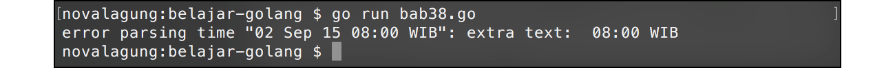

A.40. Time, Parsing Time, & Format Time
Pada chapter ini kita akan belajar tentang pemanfaatan data bertipe date-time, method-method yang disediakan, dan juga format & parsing data string ke tipe time.Time dan sebaliknya.
Go menyediakan package time yang berisikan banyak sekali komponen yang bisa digunakan untuk keperluan pemanfaatan date-time. Salah satunya adalah time.Time, yang merupakan tipe untuk data tanggal dan waktu di Go.
Time di sini maksudnya adalah gabungan date dan time, bukan hanya waktu saja.
A.40.1. Penggunaan time.Time
Tipe time.Time merupakan representasi untuk objek date-time. Ada 2 cara yang bisa dipilih untuk membuat data bertipe ini.
- Menjadikan informasi waktu sekarang sebagai objek
time.Time, menggunakantime.Now(). - Atau, membuat objek baru bertipe
time.Timedengan informasi ditentukan sendiri, menggunakantime.Date().
Berikut merupakan contoh penggunannya.
package main
import "fmt"
import "time"
func main() {
var time1 = time.Now()
fmt.Printf("time1 %v\n", time1)
// time1 2015-09-01 17:59:31.73600891 +0700 WIB
var time2 = time.Date(2011, 12, 24, 10, 20, 0, 0, time.UTC)
fmt.Printf("time2 %v\n", time2)
// time2 2011-12-24 10:20:00 +0000 UTC
}
Fungsi time.Now() mengembalikan objek time.Time dengan informasi adalah date-time tepat ketika statement tersebut dijalankan. Bisa dilihat pada saat di-print muncul informasi date-time sesuai dengan tanggal program tersebut dieksekusi.

Fungsi time.Date() digunakan untuk membuat objek time.Time baru yang informasi date-time-nya kita tentukan sendiri. Fungsi ini memiliki 8 buah parameter mandatory dengan skema bisa dilihat di kode berikut:
time.Date(tahun, bulan, tanggal, jam, menit, detik, nanodetik, timezone)
Objek cetakan fungsi time.Now(), informasi timezone-nya adalah relatif terhadap lokasi kita. Karena kebetulan penulis berlokasi di Jawa Timur, maka akan terdeteksi masuk dalam GMT+7 atau WIB. Berbeda dengan variabel time2 yang lokasinya sudah kita tentukan secara eksplisit yaitu UTC.
Selain menggunakan time.UTC untuk penentuan lokasi, tersedia juga time.Local yang nilainya adalah relatif terhadap date-time lokal kita.
A.40.2. Method Milik time.Time
Tipe data time.Time merupakan struct, memiliki beberapa method yang bisa dipakai.
var now = time.Now()
fmt.Println("year:", now.Year(), "month:", now.Month())
// year: 2015 month: 8
Kode di atas adalah contoh penggunaan beberapa method milik objek bertipe time.Time. Method Year() mengembalikan informasi tahun, dan Month() mengembalikan informasi angka bulan.
Selain kedua method di atas, ada banyak lagi yang bisa dimanfaatkan. Tabel berikut merupakan list method yang berhubungan dengan date, time, dan location yang dimiliki tipe time.Time.
| Method | Return Type | Penjelasan |
|---|---|---|
now.Year() |
int |
Tahun |
now.YearDay() |
int |
Hari ke-? di mulai awal tahun |
now.Month() |
int |
Bulan |
now.Weekday() |
string |
Nama hari. Bisa menggunakan now.Weekday().String() untuk mengambil bentuk string-nya |
now.ISOWeek() |
(int, int) |
Tahun dan minggu ke-? mulai awal tahun |
now.Day() |
int |
Tanggal |
now.Hour() |
int |
Jam |
now.Minute() |
int |
Menit |
now.Second() |
int |
Detik |
now.Nanosecond() |
int |
Nano detik |
now.Local() |
time.Time |
Date-time dalam timezone lokal |
now.Location() |
*time.Location |
Mengambil informasi lokasi, apakah local atau utc. Bisa menggunakan now.Location().String() untuk mengambil bentuk string-nya |
now.Zone() |
(string, int) |
Mengembalikan informasi timezone offset dalam string dan numerik. Sebagai contoh WIB, 25200 |
now.IsZero() |
bool |
Deteksi apakah nilai object now adalah 01 Januari tahun 1, 00:00:00 UTC. Jika iya maka bernilai true |
now.UTC() |
time.Time |
Date-time dalam timezone UTC |
now.Unix() |
int64 |
Date-time dalam format unix time |
now.UnixNano() |
int64 |
Date-time dalam format unix time. Infomasi nano detik juga dimasukkan |
now.String() |
string |
Date-time dalam string |
A.40.3. Parsing dari string ke time.Time
Data string bisa dikonversi menjadi time.Time dengan memanfaatkan time.Parse. Fungsi ini membutuhkan 2 parameter:
- Parameter ke-1 adalah layout format dari data waktu yang akan diparsing.
- Parameter ke-2 adalah data string yang ingin diparsing.
Contoh penerapannya bisa dilihat di kode berikut.
var layoutFormat, value string
var date time.Time
layoutFormat = "2006-01-02 15:04:05"
value = "2015-09-02 08:04:00"
date, _ = time.Parse(layoutFormat, value)
fmt.Println(value, "\t->", date.String())
// 2015-09-02 08:04:00 +0000 UTC
layoutFormat = "02/01/2006 MST"
value = "02/09/2015 WIB"
date, _ = time.Parse(layoutFormat, value)
fmt.Println(value, "\t\t->", date.String())
// 2015-09-02 00:00:00 +0700 WIB

Layout format date-time di Go berbeda dibanding bahasa lain. Umumnya layout format yang digunakan adalah seperti "DD/MM/YYYY", di Go tidak.
Go memiliki standar layout format yang cukup unik, contohnya seperti pada kode di atas "2006-01-02 15:04:05". Go menggunakan 2006 untuk parsing tahun, bukan YYYY; 01 untuk parsing bulan; 02 untuk parsing hari; dan seterusnya. Detailnya bisa dilihat di tabel berikut.
| Layout Format | Penjelasan | Contoh Data |
|---|---|---|
2006 |
Tahun 4 digit | 2015 |
006 |
Tahun 3 digit | 015 |
06 |
Tahun 2 digit | 15 |
01 |
Bulan 2 digit | 05 |
1 |
Bulan 1 digit jika di bawah bulan 10, selainnya 2 digit | 5, 12 |
January |
Nama bulan dalam bahasa inggris | September, August |
Jan |
Nama bulan dalam bahasa inggris, 3 huruf | Sep, Aug |
02 |
Tanggal 2 digit | 02 |
2 |
Tanggal 1 digit jika di bawah bulan 10, selainnya 2 digit | 8, 31 |
Monday |
Nama hari dalam bahasa inggris | Saturday, Friday |
Mon |
Nama hari dalam bahasa inggris, 3 huruf | Sat, Fri |
15 |
Jam dengan format 24 jam | 18 |
03 |
Jam dengan format 12 jam 2 digit | 05, 11 |
3 |
Jam dengan format 12 jam 1 digit jika di bawah jam 11, selainnya 2 digit | 5, 11 |
PM |
AM/PM, biasa digunakan dengan format jam 12 jam | PM, AM |
04 |
Menit 2 digit | 08 |
4 |
Menit 1 digit jika di bawah menit 10, selainnya 2 digit | 8, 24 |
05 |
Detik 2 digit | 06 |
5 |
Detik 1 digit jika di bawah detik 10, selainnya 2 digit | 6, 36 |
999999 |
Nano detik | 124006 |
MST |
Lokasi timezone | UTC, WIB, EST |
Z0700 |
Offset timezone | Z, +0700, -0200 |
A.40.4. Predefined Layout Format Untuk Keperluan Parsing Time
Go juga menyediakan beberapa predefined layout format umum yang bisa dimanfaatkan. Jadi tidak perlu menuliskan kombinasi komponen-komponen layout format.
Salah satu predefined layout yang bisa digunakan adalah time.RFC822, ekuivalen dengan layout format 02 Jan 06 15:04 MST. Berikut adalah contoh penerapannya.
var date, _ = time.Parse(time.RFC822, "02 Sep 15 08:00 WIB")
fmt.Println(date.String())
// 2015-09-02 08:00:00 +0700 WIB
Ada beberapa layout format lain yang tersedia, silakan lihat tabel berikut.
| Predefined Layout Format | Layout Format |
|---|---|
time.ANSIC |
Mon Jan _2 15:04:05 2006 |
time.UnixDate |
Mon Jan _2 15:04:05 MST 2006 |
time.RubyDate |
Mon Jan 02 15:04:05 -0700 2006 |
time.RFC822 |
02 Jan 06 15:04 MST |
time.RFC822Z |
02 Jan 06 15:04 -0700 |
time.RFC850 |
Monday, 02-Jan-06 15:04:05 MST |
time.RFC1123 |
Mon, 02 Jan 2006 15:04:05 MST |
time.RFC1123Z |
Mon, 02 Jan 2006 15:04:05 -0700 |
time.RFC3339 |
2006-01-02T15:04:05Z07:00 |
time.RFC3339Nano |
2006-01-02T15:04:05.999999999Z07:00 |
time.Kitchen |
3:04PM |
time.Stamp |
Jan _2 15:04:05 |
time.StampMilli |
Jan _2 15:04:05.000 |
time.StampMicro |
Jan _2 15:04:05.000000 |
time.StampNano |
Jan _2 15:04:05.000000000 |
A.40.5. Format dari time.Time ke string
Setelah sebelumnya kita belajar tentang cara konversi data dengan tipe string ke time.Time. Kali ini kita akan belajar kebalikannya, konversi time.Time ke string.
Method Format() milik tipe time.Time digunakan untuk membentuk output string sesuai dengan layout format yang diinginkan. Contoh bisa dilihat pada kode berikut.
var date, _ = time.Parse(time.RFC822, "02 Sep 15 08:00 WIB")
var dateS1 = date.Format("Monday 02, January 2006 15:04 MST")
fmt.Println("dateS1", dateS1)
// Wednesday 02, September 2015 08:00 WIB
var dateS2 = date.Format(time.RFC3339)
fmt.Println("dateS2", dateS2)
// 2015-09-02T08:00:00+07:00
Variabel date di atas berisikan hasil parsing data dengan format time.RFC822. Data tersebut kemudian diformat sebagai string 2 kali dengan layout format berbeda.

A.40.6. Handle Error Parsing time.Time
Ketika parsing string ke time.Time, sangat memungkinkan bisa terjadi error karena struktur data yang akan di-parse tidak sesuai layout format yang digunakan. Error tidaknya parsing bisa diketahui lewat nilai kembalian ke-2 fungsi time.Parse(). Berikut adalah contoh penerapannya.
var date, err = time.Parse("06 Jan 15", "02 Sep 15 08:00 WIB")
if err != nil {
fmt.Println("error", err.Error())
return
}
fmt.Println(date)
Kode di atas menghasilkan error karena format tidak sesuai dengan skema data yang akan diparsing. Layout format yang seharusnya digunakan adalah 06 Jan 15 03:04 MST.
